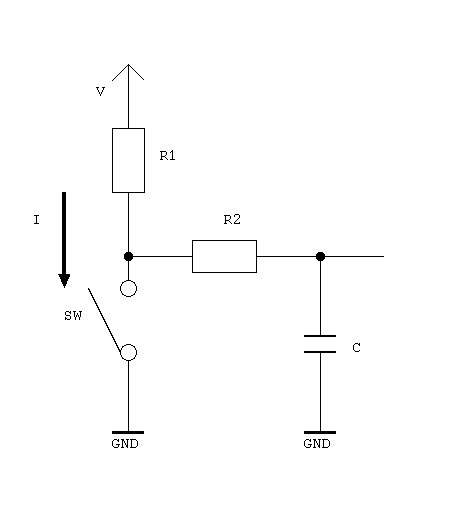
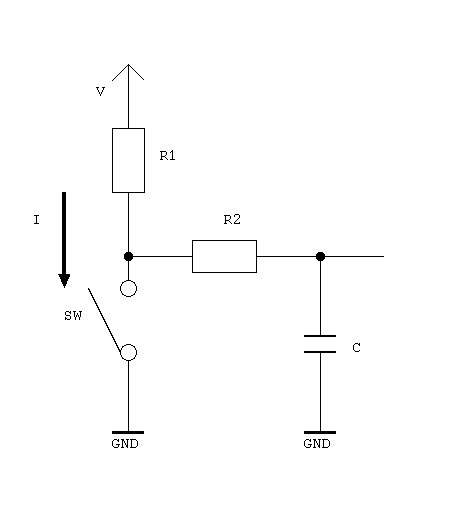

Debouncer

τ ≈ C × (R1 + R2)
I ≈ V / R1 (resistive)
V = 3.3 V, R1 = 6.2 kΩ, R2 = 15 kΩ, C = 0.01 μF
τ ≈ 0.01 μF × (6.2 kΩ + 15 kΩ) = 0.2 msec
I ≈ 3.3 V / 6.2 kΩ = 0.5 mA
(Top-up EC12PLRGBSDVBF-D-25K-24-24C-61)
This is a 24-step rotary encoder with detent. It has three (Red/Green/Blue) LEDs and a push-button.


τ ≈ C × (R1 + R2)
I ≈ V / R1 (resistive)
V = 3.3 V, R1 = 6.2 kΩ, R2 = 15 kΩ, C = 0.01 μF
τ ≈ 0.01 μF × (6.2 kΩ + 15 kΩ) = 0.2 msec
I ≈ 3.3 V / 6.2 kΩ = 0.5 mA
IF = (V − VF − VOL) / R
V = 5 V, R = 560 Ω
IF = (5 V − [2.0 – 2.4 V] − [0 – 0.4 V]) / 560 Ω ≈ 4 – 5 mA
V = 5 V, R = 220 Ω
IF = (5 V − [3.3 – 3.7 V] − [0 – 0.4 V]) / 220 Ω ≈ 4 – 8 mA
V = 5 V, R = 220 Ω
IF = (5 V − [3.3 – 3.7 V] − [0 – 0.4 V]) / 220 Ω ≈ 4 – 8 mA

R1, R2 ≪ R3 :
τ ≈ C × R3
V1 ≈ V × (R2 / (R1 + R2))
I ≈ V / (R1 + R2) (resistive)
V = 5 V, R1 = 1 kΩ, R2 = 1.5 kΩ, R3 = 10 kΩ, C = 1 μF
τ ≈ 1 μF × 10 kΩ = 10 msec
V1 ≈ 5 V × (1.5 kΩ / (1 kΩ + 1.5 kΩ)) = 3 V
I ≈ 5 V / (1 kΩ + 1.5 kΩ) = 2 mA